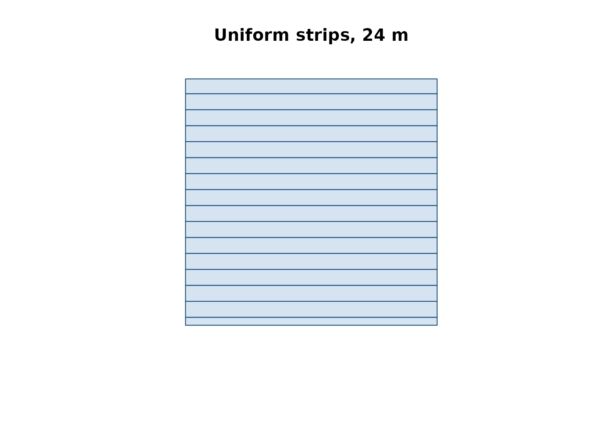

Farm-level balance and strip-prescription map
Source:vignettes/farm-and-prescription-map.Rmd
farm-and-prescription-map.RmdThis vignette walks through the end-to-end workflow that NFert v0.13 supports:
- Load a farm layout (GeoJSON) with per-plot agronomic inputs.
- Run the DPI-2026 N balance on every plot.
- Build a machine-width strip prescription map for one plot.
- Export the prescription in the formats accepted by the on-board monitor of the target tractor (Shapefile, ISOXML TASKDATA.XML, John Deere / Trimble flavours, etc.).
1. Load the demo farm
The package ships with a fictitious 35.5 ha farm near Piacenza with 8
plots carrying all the columns required by N_balance():
library(NFert)
library(sf)
ex <- system.file("extdata/example_farm.geojson", package = "NFert")
farm <- sf::st_read(ex, quiet = TRUE)
farm[, c("plot_id", "plot_name", "crop", "area_ha")]
#> Simple feature collection with 8 features and 4 fields
#> Geometry type: POLYGON
#> Dimension: XY
#> Bounding box: xmin: 9.7122 ymin: 45.048 xmax: 9.7257 ymax: 45.05645
#> Geodetic CRS: WGS 84
#> plot_id plot_name crop area_ha
#> 1 P01 Campo Grande Silage maize (class 700) 5.2
#> 2 P02 Poplar Strip Soft wheat FF - strong (grain) 3.4
#> 3 P03 Lower Ditch Grain maize 500-700 (grain) 7.8
#> 4 P04 Dovecote Field Soybean (grain) 2.1
#> 5 P05 Old Meadow Alfalfa 4.5
#> 6 P06 Riverbank Silage maize (class 500) 6.0
#> 7 P07 New Barn Durum wheat (grain) 3.7
#> 8 P08 Woodlot Field Barley (grain) 2.8
#> geometry
#> 1 POLYGON ((9.715 45.048, 9.7...
#> 2 POLYGON ((9.7187 45.048, 9....
#> 3 POLYGON ((9.7215 45.048, 9....
#> 4 POLYGON ((9.7125 45.051, 9....
#> 5 POLYGON ((9.7122 45.0535, 9...
#> 6 POLYGON ((9.7185 45.0512, 9...
#> 7 POLYGON ((9.7222 45.0512, 9...
#> 8 POLYGON ((9.7155 45.0542, 9...2. Per-plot N balance
farm_balance() applies N_balance() to every
feature and appends N_target, MAS_cap,
MAS_ok and N_total_kg to the layer. Italian
legacy strings are accepted in input and translated on the fly.
farm_out <- farm_balance(farm)
farm_out[, c("plot_id", "crop", "N_target", "MAS_cap",
"MAS_ok", "N_total_kg")]
#> Simple feature collection with 8 features and 6 fields
#> Geometry type: POLYGON
#> Dimension: XY
#> Bounding box: xmin: 9.7122 ymin: 45.048 xmax: 9.7257 ymax: 45.05645
#> Geodetic CRS: WGS 84
#> plot_id crop N_target MAS_cap MAS_ok N_total_kg
#> 1 P01 Silage maize (class 700) 29.9 340 TRUE 155.5
#> 2 P02 Soft wheat FF - strong (grain) 194.9 200 TRUE 662.7
#> 3 P03 Grain maize 500-700 (grain) 77.5 260 TRUE 604.5
#> 4 P04 Soybean (grain) 29.7 NA FALSE 62.4
#> 5 P05 Alfalfa 0.0 NA FALSE 0.0
#> 6 P06 Silage maize (class 500) 40.0 NA FALSE 240.0
#> 7 P07 Durum wheat (grain) 141.4 200 TRUE 523.2
#> 8 P08 Barley (grain) 32.2 180 TRUE 90.2
#> geometry
#> 1 POLYGON ((9.715 45.048, 9.7...
#> 2 POLYGON ((9.7187 45.048, 9....
#> 3 POLYGON ((9.7215 45.048, 9....
#> 4 POLYGON ((9.7125 45.051, 9....
#> 5 POLYGON ((9.7122 45.0535, 9...
#> 6 POLYGON ((9.7185 45.0512, 9...
#> 7 POLYGON ((9.7222 45.0512, 9...
#> 8 POLYGON ((9.7155 45.0542, 9...3. Strip prescription along an A-B line
build_strip_prescription() tiles one plot with parallel
strips of a user-supplied working width. If no A-B line is given, the
longest side of the field is used as driving direction. Dose variability
can be driven by a uniform target, a VI calibration curve, NNI zones, or
quantile classes.
field <- farm[1, ] # Campo Grande, 5.2 ha silage maize
# Option A: uniform 226 kg N/ha (from the balance), 24 m spreader
rx_uni <- build_strip_prescription(
field = field,
machine_width = 24,
variability = "uniform",
n_target = 226)
plot(sf::st_geometry(rx_uni), col = "#D5E4F0",
border = "#1F4E79", main = "Uniform strips, 24 m")
Swapping in a VI calibration curve makes the dose decrease with vigour; the mean across the field is preserved (mass-balance constraint) by default.
# Option B: VI calibration (requires an NDVI raster)
rx_cal <- build_strip_prescription(
field = field,
machine_width = 24,
variability = "calibration",
vi_raster = my_ndvi_raster,
n_target = 226,
min_dose = 80, max_dose = 260,
vi_low = 0.35, vi_high = 0.80)A 2-D grid (variable dose cell-by-cell) is produced
by passing cell_length > 0; an explicit A-B direction is
set with angle_deg (degrees, 0 = east, 90 = north) or by
supplying an sf LINESTRING in ab_line:
# Option C: 24 m working width x 50 m along-strip cells, AB = 30 deg
rx_grid <- build_strip_prescription(
field = field,
machine_width = 24,
cell_length = 50,
angle_deg = 30,
variability = "classes",
vi_raster = my_ndvi_raster,
n_target = 226,
min_dose = 80, max_dose = 260,
n_classes = 5)
# Option D: NNI-driven zones
rx_nni <- build_strip_prescription(
field = field,
machine_width = 24,
cell_length = 0, # continuous strips
variability = "nni",
nni_raster = my_nni_map,
n_target = 226,
min_dose = 80, max_dose = 260,
thr_lo = 0.90, thr_hi = 1.10)4. Export to tractor-ready formats
export_prescription() writes a single file;
export_prescription_all() bundles several formats in one
output folder.
export_prescription(rx_uni, "rx.shp", format = "shp")
export_prescription(rx_uni, "JD/rx.shp", format = "johndeere")
export_prescription(rx_uni, "TASKDATA", format = "isoxml",
isoxml_opts = list(task_name = "N top-dress",
product = "Urea 46 pct",
unit = "kg/ha"))
export_prescription_all(rx_uni, "rx_bundle", "campo_grande",
formats = c("shp", "isoxml", "johndeere"))The Shiny interface (NFert::run_app()) exposes the same
flow with interactive forms and a leaflet preview.